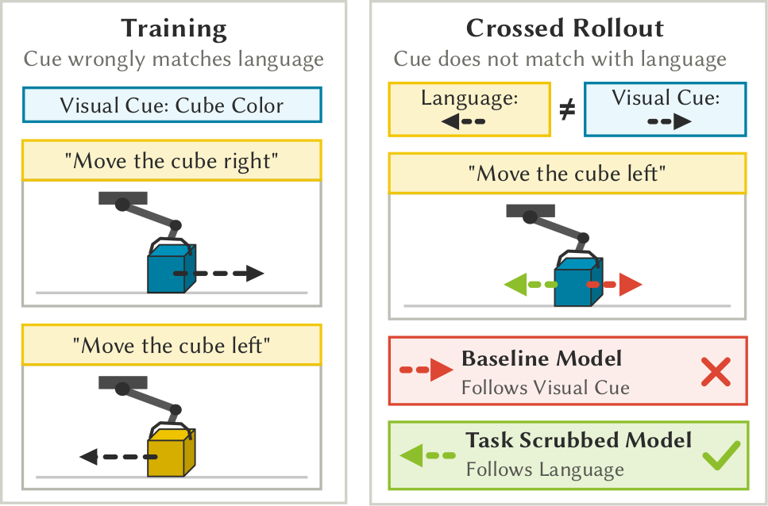
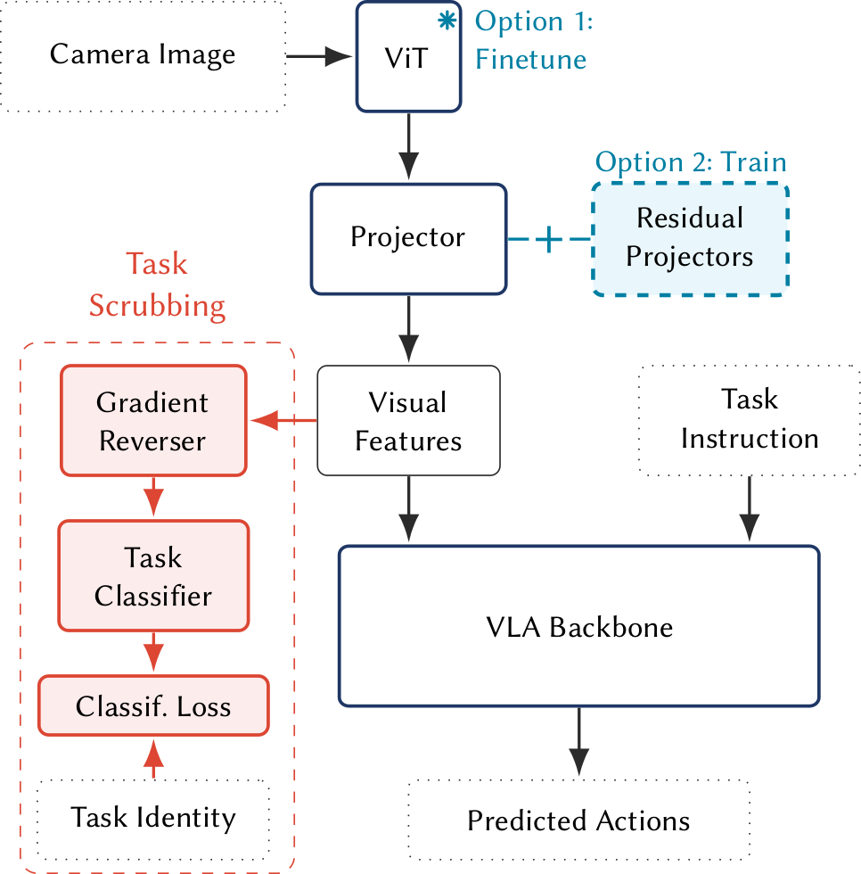
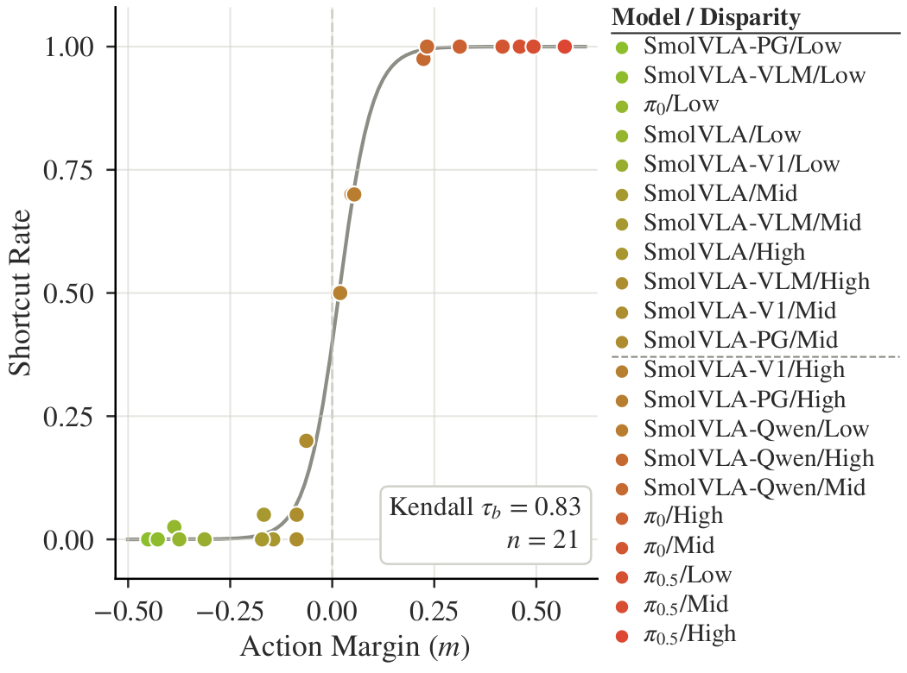
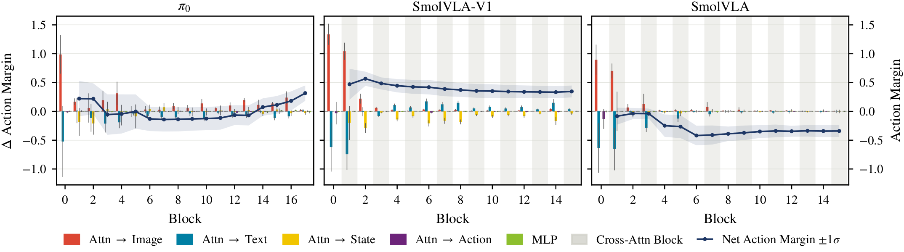
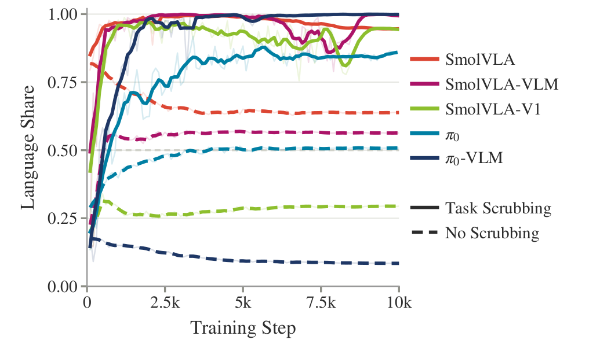

Follows the visual cue
Wrong actionVision–language–action policies
When Listening
Becomes Easier
Scrubbing Visual Cues for Shortcut-Free VLAs
Robot policies can quietly ignore language and act on irrelevant visual cues. Task scrubbing makes instructions the easier signal to follow.
3 benchmarks
3 visual cues
6+ VLA variants
The Issue
The instruction and the visual cue disagree during rollouts.
Language
Move the cube left
Visual cue
Cube color → right
Follows the instruction
Correct action01 / Problem
High task success can hide the wrong decision rule.
When camera angle, background, or object color correlates with a task during training, a VLA may use that cue as a substitute for the instruction. Evaluate using the training setup and everything works but cross the cue at test time and the policy performs the cue-consistent task—not the requested one.
The shortcut test
Cross the cue.
Reveal the policy.
Training contains aligned task–cue pairs. Out-of-distribution evaluation swaps those cues while keeping the instruction fixed, separating genuine language following from visual shortcut behavior.

Architecture matters
Backbone choice strongly changes shortcut susceptibility. Neither model size nor general VLM benchmark performance predicts robustness.
Diagnose without rollouts
Action margin tracks behavioral shortcut reliance directly from hidden representations, with Kendall τb = 0.83.
Reroute toward language
Task scrubbing makes visual task identity unstable during training, so language becomes the reliable basis for action selection.
2:30 supplementary video
See shortcuts—and
their correction—in action.
From the mechanism to simulation and the real robot, the video gives a compact walkthrough of the paper.
Method
Make the shortcut
harder to learn.
Task scrubbing adds a task classifier to projected visual tokens and reverses its gradient into the visual pathway.

Read the visual stream
Mean-pool the projected visual tokens across all camera views and pass them to an auxiliary task classifier.
Reverse the task signal
The classifier learns task identity normally; gradient reversal makes the visual pathway maximize the same classification loss.
Let language become stable
Visually encoded task identity keeps shifting, while the instruction remains a direct and reliable signal for the action learner.
Training objective
ℒ = ℒaction + wℒtask
Mechanistic evidence
Watch information
move through the model.
Two representation-level diagnostics expose whether vision or language is steering the action tokens.
Action margin
Predicts shortcut behavior without running the policy.
Action-token states are compared with task- and cue-consistent reference states. The resulting margin closely tracks measured shortcut rate.

Attention knockout
Visual cues pull early. Language can correct late.
Across backbones, task-correlated visual features shift early action representations toward the shortcut. Robust models restore instruction alignment in later layers.

Results
One intervention.
Consistent improvement.
Each benchmark crosses a task-correlated visual cue at evaluation. Select a model to compare its baseline and task-scrubbed performance.
LIBERO Spatial
OOD success
0%→48%
Viewpoint cue
Shortcut rate: 99% → 0%
ID success: 70% → 69%
RoboTwin 2.0
OOD success
5%→86%
Background cue
Shortcut rate: 0% → 0%
ID success: 98% → 95%
Real ALOHA
OOD success
0%→100%
Color + background cues
Shortcut rate: 100% → 0%
ID success: 100% → 97.5%
LIBERO and RoboTwin values are means over three seeds. Real-robot values use one seed and 20 trials per task–cue configuration. See the paper for standard deviations and complete results.
Routing changes during training
Language gains influence when visual task identity becomes unstable.
Across SmolVLA and π0 variants, task scrubbing sharply increases language share: the relative pull of instruction-consistent states on the action representation.

Paired rollouts
Same instruction.
Different decision rule.
Compare a baseline and task-scrubbed policy under a crossed visual cue. Videos loop silently and are synchronized when you change benchmarks.
Instruction “Move the bowl from the wooden cabinet.”
Baseline · π0Follows viewpoint cue
Task-scrubbed · π0Follows language
Instruction “Put the block on the red mat.”
Baseline · π0.5Shortcut action
Task-scrubbed · π0.5Language following
Instruction “Move the cup to the left.”
Baseline · SmolVLA-V1Shortcut action
Task-scrubbed · SmolVLA-V1Language following
Takeaway
Robustness is not
only a data problem.
Architecture, pretraining, and late-layer language correction all affect whether visual cues control a policy’s actions.
“The goal is not to remove vision. It is to stop task-irrelevant cues from becoming the easiest basis for action selection.”
Current limitations
- Requires task labels and a trainable visual pathway or adapter.
- The adversarial weight is architecture- and setting-specific.
- Experiments study paired tasks; broader multitask behavior remains open.
- Some settings show seed variance or reduced in-distribution success.
Resources
Paper and video.
Citation
@article{anonymous2026listening,
title = {When Listening Becomes Easier: Scrubbing Visual
Cues for Shortcut-Free VLAs},
author = {Anonymous Authors},
year = {2026}
}